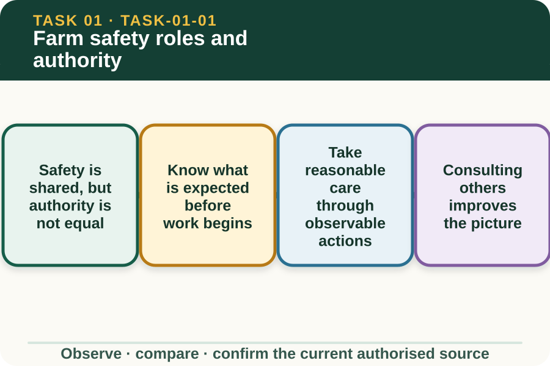

Classroom presentation · 8 slides
Farm safety roles and authority
Task 1 · 1 of 8
Farm safety roles and authority
Distinguish responsibilities, participation, consultation and the limits of a learner's authority.

Speaker notes
Teaching move (web-deck purpose): Use the module visual and the fictional worked example to move students from observation to a source-led decision. Ask students to name the evidence, the authority gap and the next safe communication step. Misconception and help: Look for the response that identifies and closes the authority gap before work begins. Ask: What is unclear, and who is authorised to confirm it? Applied action: Build an authority map. For a teacher-nominated fictional farm task, list the learner's role, the supervisor's role, one clarification point and one reportable change. Do not copy a local form or describe emergency steps. Boundary: This supplementary learning draws on mapped AHCWHS202 concepts. Current signed TAS and RTO documents control cohort delivery, assessment and competency decisions; current workplace procedures, supervision and authorised sources control real work. [Sources] - Source basis: AHCWHS202 Release 1, SafeWork NSW First Steps to Farm Safety guidance on consultation, induction, worker responsibilities and records, plus authorised teacher-posted safety notes. Current local procedures and the RTO assessment package control real work. - Visual visual-task-01-01: Generated locally from accepted Stage 05 module headings; no external image copied. - Course visual manifest: work/pi/visuals/visual-manifest.json
Task 1 · 2 of 8
Map the learning
- Safety is shared, but authority is not equal
- Know what is expected before work begins
- Take reasonable care through observable actions
Retrieve: A learner understands the task but does not know who can approve a changed route. What is the strongest response?
Speaker notes
Teaching move (learning map): Use the module visual and the fictional worked example to move students from observation to a source-led decision. Ask students to name the evidence, the authority gap and the next safe communication step. Misconception and help: Look for the response that identifies and closes the authority gap before work begins. Ask: What is unclear, and who is authorised to confirm it? Applied action: Build an authority map. For a teacher-nominated fictional farm task, list the learner's role, the supervisor's role, one clarification point and one reportable change. Do not copy a local form or describe emergency steps. Boundary: This supplementary learning draws on mapped AHCWHS202 concepts. Current signed TAS and RTO documents control cohort delivery, assessment and competency decisions; current workplace procedures, supervision and authorised sources control real work. [Sources] - Source basis: AHCWHS202 Release 1, SafeWork NSW First Steps to Farm Safety guidance on consultation, induction, worker responsibilities and records, plus authorised teacher-posted safety notes. Current local procedures and the RTO assessment package control real work. - Visual visual-task-01-01: Generated locally from accepted Stage 05 module headings; no external image copied. - Course visual manifest: work/pi/visuals/visual-manifest.json
Task 1 · 3 of 8
Notice the evidence
Safety is shared, but authority is not equal
A safe farm depends on people at every level noticing hazards, communicating clearly and following agreed controls. A learner contributes by taking reasonable care, attending instruction, asking questions and reporting conditions that may affect anyone at work.
Shared participation does not mean every person makes every decision. A supervisor or another designated person confirms the task, local procedure and reporting path, while the learner works within the training, permission and supervision they have actually received.
Know what is expected before work begins
An induction explains the rules and hazards of a particular property or work area. Even an experienced visitor needs local information because access routes, livestock, terrain, communication systems and no-go areas differ between workplaces.
Before a task, the learner should be able to state the job purpose, their role, who is supervising, what information applies and what would cause them to pause. If any of these points is unclear, clarification is part of safe work rather than a sign of weakness.
Speaker notes
Teaching move (theory idea 1): Use the module visual and the fictional worked example to move students from observation to a source-led decision. Ask students to name the evidence, the authority gap and the next safe communication step. Misconception and help: Look for the response that identifies and closes the authority gap before work begins. Ask: What is unclear, and who is authorised to confirm it? Applied action: Build an authority map. For a teacher-nominated fictional farm task, list the learner's role, the supervisor's role, one clarification point and one reportable change. Do not copy a local form or describe emergency steps. Boundary: This supplementary learning draws on mapped AHCWHS202 concepts. Current signed TAS and RTO documents control cohort delivery, assessment and competency decisions; current workplace procedures, supervision and authorised sources control real work. [Sources] - Source basis: AHCWHS202 Release 1, SafeWork NSW First Steps to Farm Safety guidance on consultation, induction, worker responsibilities and records, plus authorised teacher-posted safety notes. Current local procedures and the RTO assessment package control real work. - Visual visual-task-01-01: Generated locally from accepted Stage 05 module headings; no external image copied. - Course visual manifest: work/pi/visuals/visual-manifest.json
Task 1 · 4 of 8
Use the source boundary
Take reasonable care through observable actions
Reasonable care is shown through actions such as following a reasonable safety direction, using controls as instructed, protecting other people and not interfering with safety equipment. It also means staying alert to changes rather than assuming that yesterday's conditions still apply.
A learner should not privately decide that a fault, near miss or changed condition is unimportant. Describe what was observed, keep within the current local process and pass the concern to the designated person promptly.
Consultation improves the picture
Consultation is two-way communication about health and safety. Workers often notice changing terrain, equipment condition, animal behaviour or workflow pressure first, while supervisors may hold information about schedules, controls and other work occurring nearby.
Useful participation is specific and respectful. Instead of saying that an area feels unsafe, identify the observable condition, where it is, who or what may be exposed and what confirmation is needed before work continues.
Speaker notes
Teaching move (theory idea 2): Use the module visual and the fictional worked example to move students from observation to a source-led decision. Ask students to name the evidence, the authority gap and the next safe communication step. Misconception and help: Look for the response that identifies and closes the authority gap before work begins. Ask: What is unclear, and who is authorised to confirm it? Applied action: Build an authority map. For a teacher-nominated fictional farm task, list the learner's role, the supervisor's role, one clarification point and one reportable change. Do not copy a local form or describe emergency steps. Boundary: This supplementary learning draws on mapped AHCWHS202 concepts. Current signed TAS and RTO documents control cohort delivery, assessment and competency decisions; current workplace procedures, supervision and authorised sources control real work. [Sources] - Source basis: AHCWHS202 Release 1, SafeWork NSW First Steps to Farm Safety guidance on consultation, induction, worker responsibilities and records, plus authorised teacher-posted safety notes. Current local procedures and the RTO assessment package control real work. - Visual visual-task-01-01: Generated locally from accepted Stage 05 module headings; no external image copied. - Course visual manifest: work/pi/visuals/visual-manifest.json
Task 1 · 5 of 8
Connect evidence to action
Use stop, ask and report as decision tools
Stopping is appropriate when the task, instruction, condition or authority no longer matches what was confirmed. Asking focuses on the missing information, and reporting gives the responsible person enough evidence to decide what happens next.
These actions are not a local emergency procedure. In an actual emergency, the current workplace emergency plan and supervisor directions control the response; the website cannot replace property-specific instruction.
Records support follow-up, not competence claims
A useful safety note records facts such as the time, location, observable condition, people notified and direction received. It avoids guesses about blame, diagnosis or events that the writer did not see.
A saved website response is practice in organising those facts. It is not an incident report, an authorised workplace record or proof that a learner has met an assessment requirement unless the current RTO process explicitly says so.
Speaker notes
Teaching move (theory idea 3): Use the module visual and the fictional worked example to move students from observation to a source-led decision. Ask students to name the evidence, the authority gap and the next safe communication step. Misconception and help: Look for the response that identifies and closes the authority gap before work begins. Ask: What is unclear, and who is authorised to confirm it? Applied action: Build an authority map. For a teacher-nominated fictional farm task, list the learner's role, the supervisor's role, one clarification point and one reportable change. Do not copy a local form or describe emergency steps. Boundary: This supplementary learning draws on mapped AHCWHS202 concepts. Current signed TAS and RTO documents control cohort delivery, assessment and competency decisions; current workplace procedures, supervision and authorised sources control real work. [Sources] - Source basis: AHCWHS202 Release 1, SafeWork NSW First Steps to Farm Safety guidance on consultation, induction, worker responsibilities and records, plus authorised teacher-posted safety notes. Current local procedures and the RTO assessment package control real work. - Visual visual-task-01-01: Generated locally from accepted Stage 05 module headings; no external image copied. - Course visual manifest: work/pi/visuals/visual-manifest.json
Task 1 · 6 of 8
Retrieve and check
A learner understands the task but does not know who can approve a changed route. What is the strongest response?
- Choose the route that looks shortest and mention it later.
- Pause and ask the designated supervisor who controls the access decision.
- Wait silently until another worker takes the lead.
Teacher reveal
Correct. This identifies the authority gap before the learner acts.
Ask: What is unclear, and who is authorised to confirm it?
Speaker notes
Teaching move (retrieval): Use the module visual and the fictional worked example to move students from observation to a source-led decision. Ask students to name the evidence, the authority gap and the next safe communication step. Misconception and help: Look for the response that identifies and closes the authority gap before work begins. Ask: What is unclear, and who is authorised to confirm it? Applied action: Build an authority map. For a teacher-nominated fictional farm task, list the learner's role, the supervisor's role, one clarification point and one reportable change. Do not copy a local form or describe emergency steps. Boundary: This supplementary learning draws on mapped AHCWHS202 concepts. Current signed TAS and RTO documents control cohort delivery, assessment and competency decisions; current workplace procedures, supervision and authorised sources control real work. [Sources] - Source basis: AHCWHS202 Release 1, SafeWork NSW First Steps to Farm Safety guidance on consultation, induction, worker responsibilities and records, plus authorised teacher-posted safety notes. Current local procedures and the RTO assessment package control real work. - Visual visual-task-01-01: Generated locally from accepted Stage 05 module headings; no external image copied. - Course visual manifest: work/pi/visuals/visual-manifest.json Use option-specific feedback after the learner commits to an answer.
Task 1 · 7 of 8
Construct a source-led response
Explain how a learner can contribute to farm safety while staying within their authority. Use one fictional changed-condition example.
- The learner's responsibility is to…
- The changed condition is…
- The evidence the learner should report is…
- The decision remains with… because…
- The learner confirms the outcome by…
Success criteria
- Explains participation and authority as different ideas
- Uses objective observable evidence
- Names an appropriate clarification or reporting action
- Does not invent a local procedure or competence claim
Speaker notes
Teaching move (guided written response): Use the module visual and the fictional worked example to move students from observation to a source-led decision. Ask students to name the evidence, the authority gap and the next safe communication step. Misconception and help: Look for the response that identifies and closes the authority gap before work begins. Ask: What is unclear, and who is authorised to confirm it? Applied action: Build an authority map. For a teacher-nominated fictional farm task, list the learner's role, the supervisor's role, one clarification point and one reportable change. Do not copy a local form or describe emergency steps. Boundary: This supplementary learning draws on mapped AHCWHS202 concepts. Current signed TAS and RTO documents control cohort delivery, assessment and competency decisions; current workplace procedures, supervision and authorised sources control real work. [Sources] - Source basis: AHCWHS202 Release 1, SafeWork NSW First Steps to Farm Safety guidance on consultation, induction, worker responsibilities and records, plus authorised teacher-posted safety notes. Current local procedures and the RTO assessment package control real work. - Visual visual-task-01-01: Generated locally from accepted Stage 05 module headings; no external image copied. - Course visual manifest: work/pi/visuals/visual-manifest.json
Task 1 · 8 of 8
Close the loop
Build an authority map
For a teacher-nominated fictional farm task, list the learner's role, the supervisor's role, one clarification point and one reportable change. Do not copy a local form or describe emergency steps.
- Name the strongest evidence in the scenario.
- Explain the decision or referral it supports.
- State which current source or authorised person controls real work.
Boundary: This supplementary learning draws on mapped AHCWHS202 concepts. Current signed TAS and RTO documents control cohort delivery, assessment and competency decisions; current workplace procedures, supervision and authorised sources control real work.
Speaker notes
Teaching move (exit and application): Use the module visual and the fictional worked example to move students from observation to a source-led decision. Ask students to name the evidence, the authority gap and the next safe communication step. Misconception and help: Look for the response that identifies and closes the authority gap before work begins. Ask: What is unclear, and who is authorised to confirm it? Applied action: Build an authority map. For a teacher-nominated fictional farm task, list the learner's role, the supervisor's role, one clarification point and one reportable change. Do not copy a local form or describe emergency steps. Boundary: This supplementary learning draws on mapped AHCWHS202 concepts. Current signed TAS and RTO documents control cohort delivery, assessment and competency decisions; current workplace procedures, supervision and authorised sources control real work. [Sources] - Source basis: AHCWHS202 Release 1, SafeWork NSW First Steps to Farm Safety guidance on consultation, induction, worker responsibilities and records, plus authorised teacher-posted safety notes. Current local procedures and the RTO assessment package control real work. - Visual visual-task-01-01: Generated locally from accepted Stage 05 module headings; no external image copied. - Course visual manifest: work/pi/visuals/visual-manifest.json